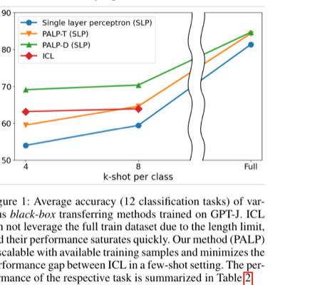

Prompt-Augmented Linear Probing: Scaling Beyond The Limit of Few-shot In-Context Learners
AAAI 2023
Hyunsoo Cho, Hyuhng Joon Kim, Junyeob Kim, Sang-Woo Lee, Sang-goo Lee, Kang Min Yoo, Taeuk Kim
One-Line Summary
Enhancing linear probing performance by leveraging prompts to scale beyond the limits of few-shot in-context learners.

Figure 1. Prompt-augmented linear probing framework that scales beyond the limits of few-shot in-context learners by combining prompt engineering with efficient probing methods.
Background & Motivation
Large language models (LLMs) can perform tasks with just a few demonstrations through in-context learning (ICL), but this approach has fundamental limitations: performance saturates or even degrades as the number of demonstrations grows, constrained by the model's fixed context window. Meanwhile, linear probing -- training a simple linear classifier on top of frozen LLM representations -- can leverage more labeled data but often underperforms ICL because it does not fully exploit the model's language understanding capabilities. This paper asks: can we combine the strengths of both approaches?
Method
The proposed method, Prompt-Augmented Linear Probing (PALP), bridges prompting and probing in a unified framework:
Prompt-augmented representations: Instead of extracting representations from raw inputs, PALP prepends task-specific prompts (e.g., templates and verbalizers) to inputs before passing them through the frozen LLM, producing richer, task-aware hidden states
Linear probing on augmented features: A lightweight linear classifier is trained on these prompt-augmented representations using all available labeled data, removing the context-length bottleneck of standard ICL
Multiple prompt ensembling: Different prompt templates yield diverse representations; PALP ensembles predictions from multiple prompts to further boost performance and robustness
Results
Surpasses ICL: PALP consistently outperforms standard few-shot ICL across a range of NLU benchmarks, especially as the number of labeled examples increases beyond what fits in a context window
Scales with data: Unlike ICL whose performance plateaus, PALP continues to improve as more labeled examples are provided, demonstrating true scalability
Efficient and parameter-light: Only a linear layer is trained on top of frozen LLM features, requiring minimal computation compared to full fine-tuning
Prompt ensembling gains: Combining multiple prompt templates further improves accuracy and reduces variance across tasks
Why It Matters
PALP demonstrates that the power of prompting and the scalability of classical probing are not mutually exclusive. By augmenting frozen LLM representations with prompt-based conditioning, practitioners can efficiently leverage all available labeled data without fine-tuning model parameters or being limited by context window size. This offers a practical, scalable pathway for deploying LLMs in data-rich settings where few-shot ICL falls short.